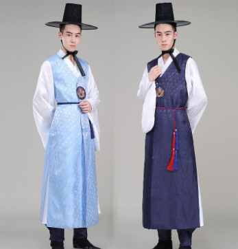
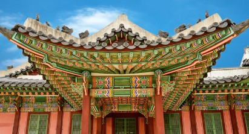

How to Get to Seoul from the Philippines

Traveling from the Philippines to Seoul involves booking a flight from major international airports such as Ninoy Aquino International Airport (NAIA) in Manila. Airlines like Philippine Airlines, Korean Air, and Asiana Airlines offer direct flights to Seoul's Incheon International Airport. The average flight duration is approximately 4 to 5 hours. Upon arrival, you can reach Gyeongbokgung Palace by taking a taxi or using Seoul's efficient public transportation system.
The subway is a convenient option, with the nearest station being Gyeongbokgung Station (Line 3). From there, it's just a short walk to the palace entrance. Make sure to check visa requirements and travel advisories before your trip.
Other Places to Visit in Seoul
Seoul is a city rich in history and culture, offering numerous attractions beyond Gyeongbokgung Palace. Here are some notable sites to consider:
- Changdeokgung Palace - A UNESCO World Heritage Site known for its harmonious design with nature.
- Bukchon Hanok Village - A traditional village showcasing hundreds of hanok (Korean traditional houses).
- Myeongdong Shopping Street - A bustling district famous for its shopping and street food.
- N Seoul Tower - An iconic tower offering panoramic views of the city.
- Insadong - A cultural district known for its antique shops, art galleries, and traditional tea houses.
Gyeongbokgung Palace

The palace was destroyed during the Japanese invasion in 1592 but was later reconstructed. It features beautiful architecture, including the Gwanghwamun Gate—the main entrance—and the Geunjeongjeon Hall, the throne hall. Visitors can also witness the changing of the guard ceremony, which takes place at the main gate and offers a glimpse into Korea's royal traditions.Gyeongbokgung Palace is surrounded by picturesque mountains and is adjacent to the Blue House, the official residence of the South Korean president. The palace grounds are open to the public, allowing visitors to explore the historic buildings, gardens, and museums that showcase Korea's rich heritage.
Why I Want to Visit Seoul

I have always been fascinated by Korean culture, history, and cuisine. Visiting Seoul would allow me to immerse myself in the vibrant atmosphere of the city, experience its rich traditions, and explore its modern advancements. Gyeongbokgung Palace, with its stunning architecture and historical significance, is a must-visit destination for me. I am eager to learn about Korea's royal history, enjoy traditional Korean food, and experience the unique blend of old and new that Seoul has to offer.
Additionally, I am excited to explore other cultural sites, try authentic Korean dishes, and experience the lively atmosphere of Seoul's markets and neighborhoods. The opportunity to witness the changing of the guard ceremony at Gyeongbokgung Palace and stroll through its beautiful gardens is something I look forward to. Overall, a trip to Seoul would be a dream come true for me as I seek to broaden my horizons and create unforgettable memories.